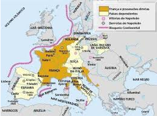
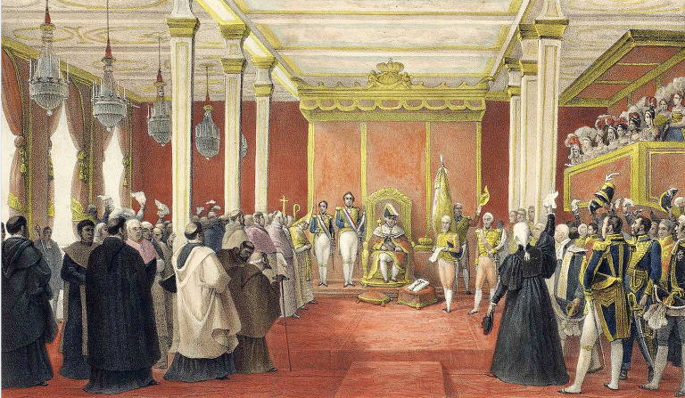
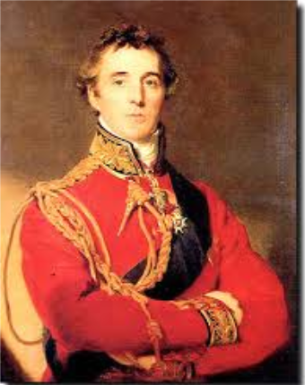
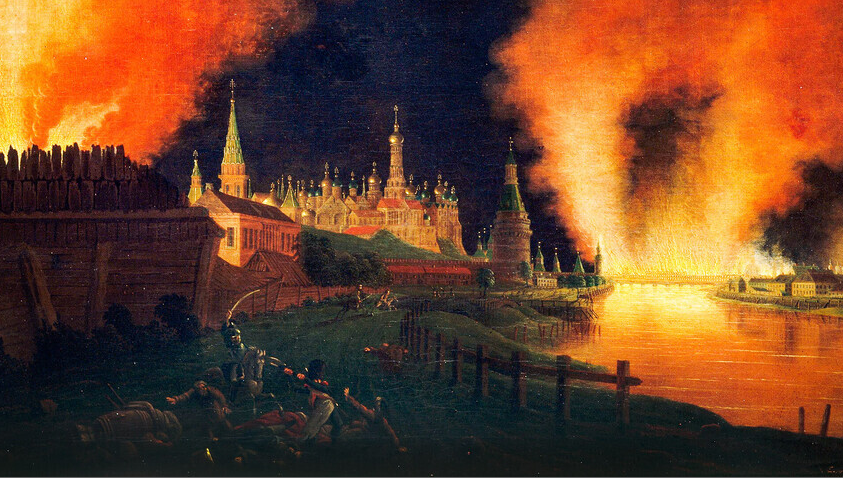
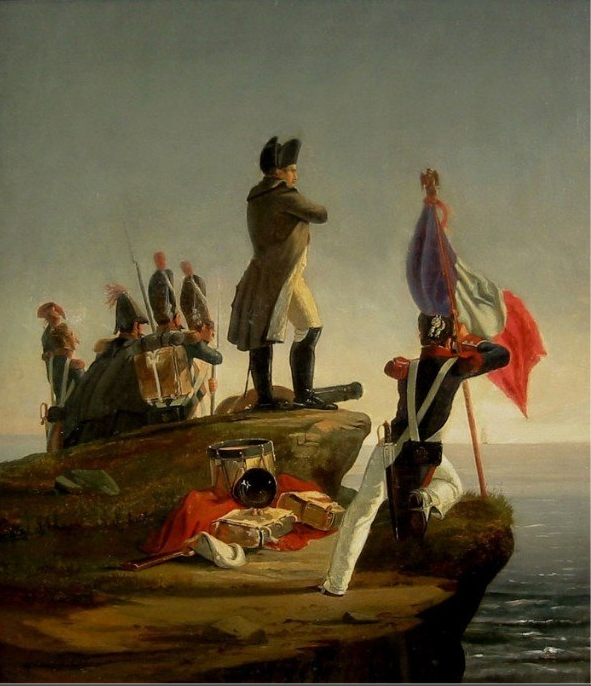
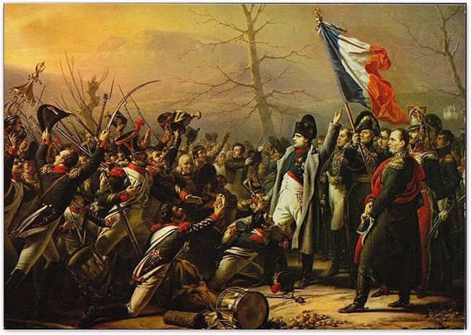
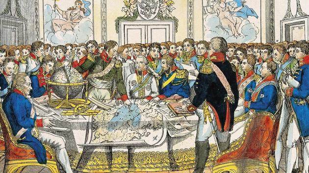

O Bloqueio Continental foi uma política econômico-militar criada por Napoleão Bonaparte em 1806 para proibir os países europeus sob sua influência de comércio com a Inglaterra, tentando enfraquecer a economia britânica e consolidar a hegemonia francesa no continente.
O Bloqueio foi formalizado pelo chamado Decreto de Berlim, em 21 de novembro de 1806, logo após a derrota francesa para a marinha britânica na Batalha de Trafalgar, quando Napoleão viu que não conseguiria vencer a Inglaterra pelo mar. Em vez de atacar diretamente a frota inglesa, buscou isolar economicamente o Reino Unido fechando os portos europeus aos navios e produtos britânicos.
A medida tinha dois grandes objetivos:
Arruinar a economia britânica, cortando seus mercados na Europa e limitando a venda de produtos fabricados em inglês.
Ampliar os mercados para as produções francesas e fortalecer a liderança política e econômica da França sobre o continente.
Os países aliados, ocupados ou dependentes da França foram reduzidos a aderir, com a ameaça de invasão militar em caso de descumprimento. Os portos deveriam ser fechados a navios britânicos, mercadorias inglesas apreendidas e destruídas, e foram criadas escavações fiscalizações alfandegárias em várias regiões da Europa.
Muitos governos europeus burlaram o sistema, recorrendo ao contrabando ou negociações secretas com Londres, porque dependiam dos produtos e do crédito britânico. Portugal, aliado histórico da Inglaterra, decidiu-se a aplicar o bloqueio de forma plena, o que levou Napoleão a ordenar as invasões francesas de Portugal (a Guerra Peninsular) e a fuga da corte portuguesa para o Brasil em 1807.
Na prática, o bloqueio prejudicou também a economia de vários países do continente, gerando descontentamento com a França e incentivando o contrabando em larga escala. A Inglaterra conseguiu contornar a medida ampliando seus mercados fora da Europa, e o alto custo político e militar para manter o bloqueio contribuído para o enfraquecimento do império napoleônico até sua queda em 1814.
O general Junot liderou cerca de 26 mil homens, apoiados por tropas espanholas via Tratado de Fontainebleau, invadindo Portugal em novembro de 1807 para forçar o fechamento de portos ao comércio britânico. A família real portuguesa fugiu para o Brasil em 29 de novembro, e Junot ocupou Lisboa no dia 30, mas gerou revoltas populares em locais como Évora e Porto, culminando na Convenção de Sintra que expulsou os franceses em agosto de 1808 com ajuda britânica.
O marechal Soult invadiu pelo norte em março de 1809, capturando o Porto após massacres, mas foi detido pelas forças anglo-portuguesas sob Wellington, recuando para Espanha.
Masséna comandou a operação principal, avançando até as Linhas de Torres Vedras, onde as defesas portuguesas e britânicas obrigaram a recuar após a Batalha do Buçaco em setembro de 1810, sofrendo fome e perdas até maio de 1811.
As invasões causaram destruição, saques e milhares de mortes, mas uniram Portugal à coalizão anti-napoleônica, pavimentando a independência do Brasil e o fim da influência francesa na Península Ibérica.
A Guerra Peninsular foi o conflito travado de 1807 a 1814 na Península Ibérica entre a França napoleônica e a aliança formada por Portugal, Espanha e Reino Unido, em torno da resistência às invasões francesas e ao Bloqueio Continental. Ela é, ao mesmo tempo, a guerra de independência da Espanha e o contexto mais amplo das três invasões francesas de Portugal. Causas principais
A guerra começou quando Napoleão, ao tentar tornar eficaz o Bloqueio Continental contra a Inglaterra, decidiu ocupar Portugal, tradicional aliado britânico, e intervir na política interna da Espanha. O Tratado de Fontainebleau (1807) autorizou a passagem de tropas francesas pela Espanha para invadir Portugal, mas rapidamente essas tropas também ocuparam cidades espanholas e derrubaram a dinastia Bourbon, instalando José Bonaparte no trono espanhol, o que provocou revoltas massivas.
Na Espanha, uma população guerrilheira que destruiu o exército francês, tornando a Península um “atoleiro” militar para Napoleão. Em Portugal, as três invasões francesas foram combatidas pelas forças luso-britânicas comandadas por Wellington, com batalhas decisivas como Vimeiro (1808), Porto (1809) e Buçaco (1810), equipadas pelas Linhas de Torres Vedras na defesa de Lisboa.
Em junho de 1812, Napoleão invadiu a Rússia com o Grande Exército de cerca de 600 mil homens, visando forçar o czar Alexandre I a aderir ao Bloqueio Continental. A campanha foi um desastre: os russos adotaram a tática da terra arrasada, queimando Moscou, enquanto o rigoroso inverno e doenças dizimaram as tropas.
Apenas 40 mil soldados retornaram. Essa derrota esgotou o exército francês, incentivando coalizões europeias contra Napoleão e marcando o início de sua queda.
Após a invasão russa e avanços aliados na Alemanha e França, Paris caiu em março de 1814. Napoleão abdicou em 6 de abril, exilado na ilha de Elba (Itália), com soberania simbólica e pensão. A monarquia Bourbon foi restaurada com Luís XVIII.
O exílio durou menos de um ano, mas expôs divisões na Europa pós-napoleônica.
Napoleão escapou de Elba em fevereiro de 1815, retornando à França e reassumendo o poder nos "Cem Dias". A Batalha das Nações (Leipzig, 1813) já havia enfraquecido os franceses, mas o clímax foi Waterloo (junho de 1815), onde foi derrotado por Wellington e Blücher.
Abdicação final em 22 de junho, exílio em Santa Helena, onde morreu em 1821.
Reunião diplomática das potências vencedoras (Áustria, Prússia, Rússia, Reino Unido e França restaurada) para reorganizar a Europa após Napoleão. Presidido por Metternich (Áustria), estabeleceu o "Concerto Europeu" e o princípio de legitimidade das monarquias.
Legitimidade: Restauração das dinastias pré-napoleônicas (Bourbons na França e Espanha). Equilíbrio de poder: Criação de reinos-tampão (Países Baixos, Confederação Germânica). Compensações territoriais: Áustria ganhou Lombardia, Prússia o Reno, Rússia a Polônia.
Estabeleceu 40 anos de paz relativa na Europa, mas ignorou aspirações nacionais, plantando sementes para revoluções de 1848. Foi interrompido pelos Cem Dias, mas retomado após Waterloo.